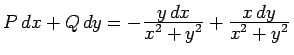
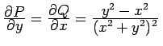
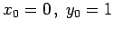
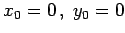
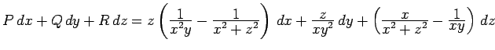

Inhalt Index DeskTop Bronstein

 Integralrechnung Kurvenintegrale Unabhängigkeit des Kurvenintegrals vom Integrationsweg Berechnung der Stammfunktion
Integralrechnung Kurvenintegrale Unabhängigkeit des Kurvenintegrals vom Integrationsweg Berechnung der Stammfunktion


Ist die Bedingung (8.129c) erfüllt, dann kann die Stammfunktion für den Integrationsweg AKLP (s. Abbildung) mit der Formel

| Beispiel A |
|
. Die Bedingung (8.129c) ist erfüllt: . Anwendung der Formel (8.132b) und Einsetzen von  ( darf nicht gewählt werden, da die Funktionen P und Q im Punkt (0,0) unstetig sind) liefert |
| Beispiel B |
|
. |